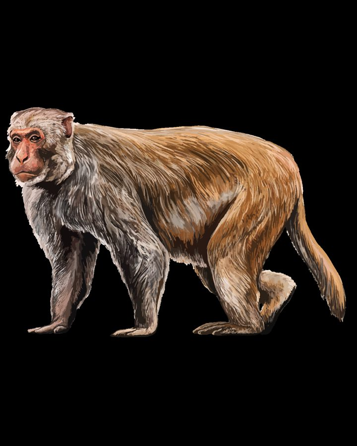

बंदरRhesus Macaque
Macaca mulatta · Cercopithecidae · MAM-0006

- Scientific name
- Macaca mulatta (Zimmermann, 1780)
- Family
- Cercopithecidae
- Hindi
- बंदर / रीसस बंदर
- Status here
- native
- IUCN
- LC
When to look कब देखें
Present all year.
बंदर / Rhesus Macaque
Macaca mulatta (Zimmermann, 1780) — Cercopithecidae
बंदर — भारतीय उपमहाद्वीप का सबसे आम और इंसानों के बीच रहने वाला भूरे रंग का चालाक स्तनधारी। इसके बिना बालों वाले चेहरे का रंग गुलाबी या लाल होता है और इसकी पीठ के निचले हिस्से, जांघों और कूल्हों पर चमकीला नारंगी-लाल (rust-orange) रंग होता है जो इसकी मुख्य पहचान है। यह एक अत्यंत सामाजिक जीव है जो बड़े झुंडों (troops) में रहता है। ग्रामीण क्षेत्रों में फसलों और बगीचों को भारी नुकसान पहुँचाने के कारण यह किसानों के लिए एक चुनौती है, लेकिन हिंदू आस्था में भगवान हनुमान से जुड़े होने के कारण इसे धार्मिक आदर भी प्राप्त है।
Quick Identification त्वरित पहचान
| Feature | Description |
|---|---|
| Form | Medium-sized, stocky monkey with expressive eyes and a bare, pinkish-red face |
| Coloration | Dull greyish-brown to golden-brown coat; lower back, rump, and thighs are a distinct rusty orange-red |
| Tail | Moderately short, hairy tail (19–32 cm), about half of the head-body length; held straight or curved slightly |
| Behaviour | Highly active, diurnal, and bold; lives in noisy social troops; walks on all four limbs (quadrupedal) |
| Vocalisations | Loud alarm barks, grunts, and shrill screams used to communicate with the troop |
Field tip: A brown monkey with a pink face and a prominent orange-red patch on its lower back and thighs. Typically seen in large troops running on the ground, climbing temple roofs, or raiding crops.
Morphology आकारिकी
Biometrics (typical measurements in northern Indian populations):
| Measurement | Range |
|---|---|
| Head-body length | 47–65 cm |
| Tail length | 19–32 cm |
| Weight | 4.0–12.0 kg |
Fur: Medium-length, dense coat. The fur on the shoulders and head is a dull sandy or greyish-brown, while the fur on the lower spine, rump, and outer thighs is a striking rusty orange-red or coppery color.
Face: The face is bare of fur, exposing pinkish-flesh skin. During the breeding season, hormonal changes cause this facial skin (as well as the skin around the genitals) to turn a deep red color in both males and females.
Sexual Dimorphism: Males are significantly larger, heavier (averaging 7.7–12 kg), and possess much longer, sharper canine teeth than females (averaging 4–6.5 kg).
Limbs: Designed for quadrupedal walking on the ground (terrestrial) and climbing in trees (arboreal). The hands and feet have opposable thumbs and big toes for grasping.
Ecological Role पारिस्थितिक भूमिका
Seed disperser and predator. Rhesus Macaques consume a wide variety of wild fruits. They disperse seeds of forest trees like Peepal and Mango by discarding the seeds or passing them through their digestive tract. However, they also chew and destroy seeds, acting as seed predators.
Synanthropic competitor. In human-modified landscapes, they occupy the niche of a generalist scavenger. They compete with local birds (such as crows and mynas) and rodents for food scraps, and frequently raid bird nests to eat eggs and nestlings.
Life Cycle / Phenology जीवन चक्र
- Social structure: Highly social. Troops consist of 20 to 80 individuals organized around a matriarchal hierarchy of related females (matrilines). Males disperse to other troops upon reaching sexual maturity.
- Breeding season: Mating occurs year-round, peaking in autumn (October–December).
- Gestation: About 164 days. Females give birth to a single infant.
- Infant care: The infant clings to the mother's belly for the first few weeks, later riding on her back. Weaning occurs at 6–12 months, and sexual maturity is reached at 3–4 years. The lifespan in the wild is 15–20 years.
Host Plants or Prey आहार
Primary food items:
- Cultivated crops: Wheat, paddy (Oryza sativa), sugarcane (Saccharum officinarum), and pulses.
- Fruits: Mango (Mangifera indica), Guava, Papaya, and Neem berries.
- Wild vegetation: Tender leaves, shoots, flowers, and roots.
- Human food: Cooked bread (roti), fruits, and processed food scraps.
- Occasional animal prey: Grasshoppers, termites, bird eggs, and nestlings.
Predators / Natural Enemies शत्रु
- Leopards — The primary natural predator in forested areas, though rare in Basti plains.
- Feral Dogs — Pack-hunt monkeys that forage on the ground in villages.
- Humans — Conflict leads to capture, relocation, or defensive retaliation.
Agricultural / Human Relevance कृषि प्रासंगिकता
Crop raiding. Rhesus monkeys are a major agricultural pest in Basti district. Troops raid wheat, sugarcane, and fruit orchards, tearing down stalks and biting half-ripe fruits, causing massive economic losses to farmers.
Urban nuisance. In towns, they tear up roofs, break electrical wires, steal household groceries, and can aggressively bite humans when threatened or when demanding food. They are vectors for rabies and other zoonotic diseases.
Cultural and religious status. Revered in Hinduism due to their association with the monkey god Lord Hanuman. Feeding monkeys at temples (such as in Hanuman Garhi in neighboring Ayodhya) is a common religious practice. This constant feeding has habituated the monkeys, removing their natural fear of humans and intensifying human-wildlife conflict.
Expected Locally स्थानीय रूप से अपेक्षित
Not a field record. Written from published accounts for eastern Uttar Pradesh. No confirmed local sighting yet — if you have seen it, that is what the atlas needs.
अभी तक स्थानीय पुष्टि नहीं। यह विवरण प्रकाशित स्रोतों से है, किसी अवलोकन से नहीं।
Extremely common and highly visible throughout Basti district. Large troops reside along the Basti-Ayodhya national highway, waiting for passing travelers to throw food. In rural areas, groups can be seen scanning agricultural bunds, requiring farmers to maintain constant vigilance to protect their crops.
Distribution वितरण
Global range: Widespread across South, Central, and Southeast Asia, from eastern Afghanistan through Pakistan, India, Nepal, Bangladesh, to Myanmar, Thailand, Vietnam, and southern China.
In India: Widespread in plains and hills up to 2,500 metres across northern, central, and eastern India, down to the Godavari River in the south.
In Uttar Pradesh: Abundant in all rural, forest, suburban, and urban districts.
In Basti district / eastern UP: Ubiquitous across all blocks, particularly dense near highways, temples, and orchards.
Range notes: No significant range changes documented.
Research Questions शोध प्रश्न
Anyone can investigate these | कोई भी इन प्रश्नों की जाँच कर सकता है
- How does the average size of monkey troops change between urban market areas and rural village borders in Basti? / बस्ती के शहरी बाज़ार क्षेत्रों और ग्रामीण गाँव की सीमाओं के बीच बंदरों के झुंड के औसत आकार में क्या बदलाव होता है? — Conduct census counts of 3 urban and 3 rural troops.
- Which crop varieties grown in your village are most resistant to monkey damage, and why? / आपके गाँव में उगाई जाने वाली फसलों की कौन सी किस्में बंदरों के नुकसान के प्रति सबसे अधिक प्रतिरोधी हैं और क्यों? — Interview farmers about crop damage levels.
- Does the daily timing of monkey visits to crop fields correlate with human working hours? — Track field entry times over a month.
- What percentage of villagers in Basti support monkey relocation vs. traditional religious tolerance? / बस्ती के कितने प्रतिशत ग्रामीण बंदरों को स्थानांतरित करने का समर्थन करते हैं बनाम पारंपरिक धार्मिक सहिष्णुता का? — Conduct a community opinion survey.
- How do macaque troops modify their diet during the dry summer months when agricultural crops are harvested? — Document wild vs. human food consumption in May.
Similar Species मिलती-जुलती प्रजातियाँ
| Species | How to tell apart | हिंदी |
|---|---|---|
| Gray Langur (Semnopithecus entellus) | Much larger and slender; tail is longer than the head-body length; face is solid black with grey-white body fur; lacks red rump | लंगूर / हनुमान लंगूर — काला चेहरा, लंबी पूंछ |
| Bonnet Macaque (Macaca radiata) | Cap of hair radiating from the crown; tail is longer than the body; lacks the rusty orange-red rump; found in southern India | टोपी बंदर — सिर पर बालों का चक्र, लंबी पूंछ |
Field rule: Stocky brown body, bare pink face, and a distinct coppery-orange or rusty-red patch on the lower back and thighs identify Macaca mulatta.
Taxonomy & Classification वर्गीकरण
Original description. The German zoologist Eberhard August Wilhelm von Zimmermann described the species as Cercopithecus mulatta in 1780 in his work Geographische Geschichte des Menschen (Vol. 2, p. 339). The type locality is India. It was later placed in the genus Macaca by Lacépède. The genus name Macaca comes from the Portuguese macaque (monkey).
Subspecies. Globally, four subspecies are recognized, with the nominate form occurring in India:
- Macaca mulatta mulatta (Zimmermann, 1780) — UP subspecies; common throughout northern India.
Family and order placement. Placed in the order Primates, suborder Haplorhini, family Cercopithecidae (Old World monkeys), subfamily Cercopithecinae.
Phylogenetic notes. Macaca mulatta belongs to the fascicularis species group of macaques. It is closely related to the Long-tailed Macaque (Macaca fascicularis).
IUCN status rationale. Listed as Least Concern (LC). The species has a massive geographic distribution, is highly adaptable to human landscapes, and has stable or increasing populations, despite local capture for biomedical research and conflict control.
Photo Gallery फोटो गैलरी
References संदर्भ
- Zimmermann, E.A.W. von (1780). Geographische Geschichte des Menschen, und der vierfüssigen Thiere. Vol. 2. Weygand, Leipzig, p. 339.
- Prater, S.H. (1971). The Book of Indian Animals. Bombay Natural History Society, Mumbai.
- Pocock, R.I. (1939). The Fauna of British India, including Ceylon and Burma. Mammalia. Vol. 1. Taylor & Francis, London.
- Southwick, C.H., Beg, M.A. & Siddiqi, M.R. (1965). Rhesus monkeys in North India. In: DeVore, I. (ed.) Primate Behavior, Holt, Rinehart & Winston, New York.
- Zoological Survey of India (ZSI) — Mammal Fauna of Uttar Pradesh.
- GBIF Occurrence Data — Macaca mulatta, Uttar Pradesh (2010–2025).
Source file: species/fauna/mammals/rhesus_macaque.md